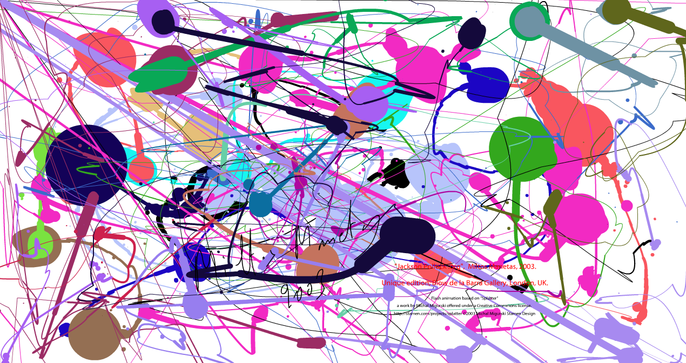

I found this site randomly while searching the web. I thought it was really interesting and fun because of how you are able to change the colors by clicking the mouse. I also enjoy Jackson Pollocks art alot and this was a creative way of being able to somewhat mimic his style without the mess. Down below I made a MESSter piece, I hope you enjoy it.
